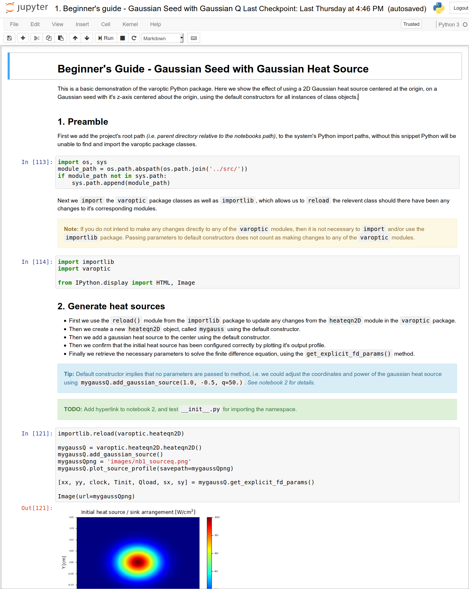

About¶
Photonics LABoratory: Software for the simulation, analysis, design, interface and control of optical hardware and photonics components.
Installation¶
Where possible to development and simulation ecosystem will strive to be as Pythonic as possible. However, we do accommodate MatLab appliances and interfaces in many instances.
Dependencies¶
This package was built using and tested against these versions of
Python: 3.6.3,
Numerical Python: NumPy 1.13.3dev1,
Scientific Python: SciPy 1.0.0-1,
Hierarchical Binary Data Format: HDF5 1.10.1-1,
Python Bindings for HDF5: H5Py 2.7.1-1,
Matplotlib: 2.1.0-1,
Specialised image processing routines for SciPy: Scikit-Image 0.13.1-1,
Python Testing Framework: PyTest 3.4.0-1,
PyTest Distributed Testing Plugin: PyTest-XDist 1.22.0-1,
PyTest fixture for benchmarking code: PyTest-Benchmark 3.1.1-1,
Python Code Coverage Measurement: PyTest-Cov 2.5.1-1, and
Universal document converter: Pandoc 2.0.6,
Open-source, production-grade container orchestration system for automating application deployment, scaling, and management: Kubernetes,
Local Kubernetes cluster implementation: minikube,
Open-source monitoring system with a dimensional data model, flexible query language, efficient time series database and modern alerting approach: Prometheus,
Open platform for analytics and monitoring: Grafana,
NVIDIA parallel computing platform and API: CUDA 9.1.85.3-5,
NumPy aware dynamic Python compiler: Numba 0.38.0-1,
NVIDIA CUDA Toolkit provides a development environment for creating high performance GPU-accelerated applications: CUDAToolkit,
Python wrapper for Nvidia CUDA: PyCUDA 2017.1.1-5,
Python interface to many of the functions in the CUDA device/runtime (e.g. CUBLAS, CUFFT and CUSOLVER) Scikit-CUDA 0.5.2,
NVIDIA Collective Communications Library to perform collective multi-GPU / multi-node computations NCCL 2.1.15 (NVIDIA Developer Programme Registration Required),
NumPy-like API accelerated with CUDA CUPY.
Add /opt/cuda/bin to /etc/profile for access to the NVIDIA
compiler and bindings.
Anaconda¶
Most of the above dependencies can be satisfied by installing the Python 3.6. version of Anaconda 5.0.1. However with regards to the Python Bindings for HDF5, imaging routines from scikit, the testing framework and Pandoc, you’ll need to run the following within your Anaconda environment.
$ conda install h5py
$ conda install scikit-image
$ conda install pytest
$ conda install pytest-cov
$ conda install pytest-xdist
$ conda install pytest-benchmark
$ conda install pandoc
$ conda install cupy-cuda91
# $ conda install cudatoolkit
# $ conda install numba
$ conda install scikit-cuda
Future dependencies¶
Pandas: High performance data analysis,
Scikit-Learn and TensorFlow: Specialised tools for machine learning, data mining and data analysis,
Tensorflow-CUDA: GPU-Accelerated TensorFlow, (see python-tensorflow-opt-cuda),
CUDNN: Nvidia CUDA Deep Neural Network Library,
PyTorch: Tensors and Dynamic neural networks in python with strong GPU acceleration,
PyTorch-CUDA: Support for CUDA tensor types, (see python-pytorch-cuda),
OpenCV: Open Source Computer Vision Library,
OpenCL: (Open Computing Language) is the open, royalty-free standard for cross-platform, parallel programming of diverse processors found in personal computers, servers, mobile devices and embedded platforms,
PyOpenCL: Python wrapper for OpenCL,
ReScale TensorFlow: Deep learning with multiple, distributed GPUs,
MapR and Kuberbetes: Deploy distributed Deep Learning QSS on GPU Cluster.
Usage¶
A good resource and basic introduction to the scientific Python stack and it’s uses is Tim Fuller’s FEM with Python.
Use Git to get source-code¶
Once you’ve Created your Bitbucket Account and added your public ssh-key to the private Bitbucket NLC Novel Lasers repository by emailing it to the admin, you can get access to the source by:
$ cd your_desired_working_folder
$ git clone git@bitbucket.org:NLisa/photonicslab.git your_desired_checkout_name
# Or without ssh-keys
$ git clone https://bitbucket.org/NLisa/photonicslab.git your_desired_checkout_name
To actively contribute to development of the project, Create a Fork on your Bitbucket account and use it Locally Edit your local checkout of the source code, then Pull Changes from the original Photonicslab repository, and Push Your Changes back to your remote Bitbucket account:
$ cd your_desired_working_folder
$ git remote add <your_desired_fork_name> <url_to_your_bitbucket_fork>
$ git pull origin
$ git push <your_desired_fork_name>
Finally from your Bitbucket account web page, you can then Submit Pull Requests, see the Bitbucket Tutorial or Atlassian Git Syncing Tutorial should you have any difficulties.
Jupyter Notebooks¶
The developer or end-user can learn to use the software through a series
of Jupyter Notebooks, which are
included with the src.
These lessons provide a set of interactive literate programming tools
that are very
effective
for exploratory data analysis. The sub-folder notebooks/reports
contains more polished work that is `near-publication-ready’.
Generally speaking these serve as high level functional, systems or
acceptance tests.

img¶
First change directory into the notebooks folder and then start the notebook server:
$ cd notebooks
$ jupyter notebook
This will start the interactive Python session in your browser and from there you can start the Lessons.
Project Layout and Documentation¶
├── docs
│ ├── conf.py
│ ├── html
│ │ ├── index.html
│ ├── index.rst
│ ├── methods.rst
│ └── README.rst
├── index.html
├── LICENSE
├── Makefile
├── Manifest.in
├── notebooks
│ ├── Lesson 00. Introduction to Git, Anaconda (Python), Kubenetes (Docker), Prometheus, Grafana and CUDA.ipynb
│ ├── Lesson 01. Introduction to PhotonicsLAB (2D Gaussian heat source pair).ipynb
│ ├── Lesson 02. Demonstration of 2D phase modulated (VarOptic) Gaussian beam generation and propagation.ipynb
│ ├── Lesson 03. Demonstration of 2D phase modulated (VarOptic) LG-mode generation and propagation.ipynb
│ ├── Lesson 04. Demonstration of 2D source addition from an image file.ipynb
│ ├── Lesson 05. Demonstration of 2D dynamic and temporal heat source.ipynb
│ ├── Lesson 06. Demonstration of 2D sequential thermal lensing of a beam through consecutive elements.ipynb
│ ├── Lesson 07. Demonstration of 2D thermal lensing based shaping using pixelated (addressable) VarOptic.ipynb
│ ├── Lesson 08. Demonstration of 3D LG-Mode collamation, imaging and M-Squared measurements.ipynb
│ ├── Lesson 09. Demonstration of 3D transient heat eqn and phase modulated (VarOptic) Gaussian beam generation and propagation.ipynb
│ ├── Lesson 10. Demonstration of 3D (VarOptic) quad-source phase modulated LG mode.ipynb
│ ├── Lesson 11a. Demonstration of 3D (VarOptic) 4mm flat-top pump, focusing thermal lens.ipynb
│ ├── Lesson 11b. Demonstration of 3D (VarOptic) 2mm flat-top pump, focusing thermal lens.ipynb
│ ├── Lesson 12. Demonstration of 3D (VarOptic) Gaussian to Bessel Beam to Doughnut Transformation.ipynb
│ ├── Lesson 13. Demonstration of 3D (VarOptic) Gaussian to Flat-top Transformation.ipynb
│ ├── Lesson 14. Demonstration of 3D fully vectorial single pass focusing of TEM00 Gaussian mode by GRIN Lens-like medium.ipynb
│ ├── Lesson 15. Demonstration of 3D fully vectorial single pass through two laser rods with Faraday rotator in-between.ipynb
│ ├── Lesson 16. Demonstration of 3D fully vectorial stress induced (pinched optics) birefringent distortions.ipynb
│ ├── Lesson 17. Demonstration of 3D fully vectorial single pass addressable gain amplifier.ipynb
│ ├── Lesson 18. Demonstration of 3D fully vectorial single pass amplification with thermal lensing and birefringence.ipynb
│ ├── Lesson 19. Demonstration of 3D fully vectorial single transeverse mode Yb-YAG disk statble resonator with thermal lensing and birefringence.ipynb
│ ├── Lesson 20. Demonstration of 3D fully vectorial pixelated gain (addressable) diode laser.ipynb
│ ├── Lesson 21. Report - Demonstration of 3D thermal lensing effects of different coatings on glass and saffire.ipynb
│ ├── Lesson 22. Report - Benchmarking various GPU-accelerated frameworks.ipynb
│ ├── Lesson 23. Report - Convolutional neural network for fully vectorial output beam prediction from arbitrary pump - seed configuration.ipynb
│ ├── Lesson 24. Acceptance Tests for Supervised Machine Learning of Conjugate Phase and Polarization Profiles.ipynb
│ ├── Lesson 24. Acceptance Tests for Wavefront Reconstruction using SLM CGHs.ipynb
│ ├── hdf5db
│ │ └── storage.hdf5
│ ├── images
│ ├── reports
│ │ ├── Experimental validation of 3D Flat-Top Thermal Lensing Simulation.ipynb
│ │ └── Comparrison of Thermal Lensing Abberrations Between Fused Silica and Saphire.ipynb
│ ├── storage.hdf5
│ └── videos
├── README.md
├── README.org
├── requirements.py
├── setup.py
├── tests
│ ├── conftest.py
│ ├── beamprop
│ │ ├── conftest.py
│ │ └── test_beamprop.py
│ ├── fdsolver
│ │ ├── conftest.py
│ │ └── test_fdsolver.py
│ ├── gaussian_heat_source
│ │ ├── conftest.py
│ │ └── test_gaussian_heat_source.py
│ ├── heateqn
│ │ ├── conftest.py
│ │ └── test_heateqn.py
│ ├── phasemod
│ │ ├── conftest.py
│ │ └── test_phasemod.py
│ ├── visualize
│ │ ├── conftest.py
│ │ └── test_visualize.py
├── pytest.ini
├── usage.png
└── photonicslab
├── __init__.py
├── amplifier.py
├── beamprop.py
├── beamqual.py
├── config.py
├── fdsolver.py
├── gaineqn.py
├── heateqn.py
├── maxwelleqn.py
├── phasemod.py
├── resonator.py
├── anisotropy.py
└── visualize.py
Application Programming Interface¶
The API and developer documentation was built using Sphinx 1.6.5-2, and generated automatically and directly from the source-code and is available to be viewed in a browser as follows:
$ firefox docs/html/index.html
Configuring Sphinx¶
$ sphinx-quickstart
After configuring
Sphinx to build
the documentation, enable
Napoleon
which is a Sphinx
Extension
allowing one to use either
Google or
NumPy
style docstrings, and
change the theme. Note that this project subscribes to the Google
docstring
convention.
Also, ensure that the
MathJax
extension is also enabled as this JavaScript package is used to
transform the as-is LaTeX markup to readable math live in the HTML
browser. Make sure to also enable the
AutoDoc
and
AutoSummary
extensions to enable automatic documentation generation directly from
the source code’s doctstrings. Configure support for todo
items. Configure
support for inheritance
diagrams.
In addition, the html_sidebars directive add documentation traversal
links to all the source pages, see <./docs/methods.rst> for automatic
generation of single page function definitions. Finally configure
Intersphinx
to link to other project’s documentation.
# ./docs/conf.py
#---------------
# Add napoleon to the extensions list
extensions = [..., 'sphinx.ext.napoleon', 'sphinx.ext.mathjax', 'sphinx.ext.autodoc',
'sphinx.ext.autosummary', 'sphinx.ext.intersphinx', 'sphinx.etx.todo',
'sphinx.ext.inheritance_diagram'...]
# ...
autosummary_generate = True # Make _autosummary files and include them
napoleon_numpy_docstring = False
napolean_use_rtype = False
todo_include_todos = True
inheritance_graph_attrs = dict(rankdir='TB', size='""')
# ...
html_theme = 'classic'
# ...
html_sidebars = {
'**': [
'localtoc.html',
'relations.html', # needs 'show_related': True theme option to display
'searchbox.html',
]
# ...
intersphinx_mapping = {'python': ('https://docs.python.org/3/', None),
'numpy': ('http://docs.scipy.org/doc/numpy/', None),
'scipy': ('http://docs.scipy.org/doc/scipy/reference', None),
'matplotlib': ('http://matplotlib.sourceforge.net', None),
'h5py' : ('http://docs.h5py.org/en/latest/', None),
'sklearn': ('http://scikit-learn.org/stable/', None)}
To render mathematics in web pages using LaTeX, ensure that you have MathJax installed on your system, see Getting Started with MathJax.
To render the inheritance diagrams for the application programming interface, ensure that you have Graphviz installed on your system.
One is encouraged to refer to the following resources with regards to the docstring conventions and constructs:
reStructuredText Primer: Brief introduction to reStructuredText(reST) concepts and syntax.
Math support in Sphinx: Keep in mind that when you put math markup in Python doc-strings read by autodoc, you either have to double all backslashes, or use Python raw strings (r“raw”). The convention in this project is to double all backslashes.
Inline markup: Sphinx uses interpreted text roles to insert semantic markup into documents.
Documenting Your Project Using Sphinx: This covers a few of the many, many commands available via sphinx.
Configuring API landing page¶
#./docs/index.rst
#-------------------------
.. photonicslab documentation master file, created by
sphinx-quickstart on Thu Dec 7 15:55:26 2017.
You can adapt this file completely to your liking, but it should at least
contain the root `toctree` directive. Check indentation of indices and tables.
Quick Start
===========
.. toctree::
:maxdepth: 3
:caption: Getting Started Guide
quickstart
Documentation
=============
.. toctree::
:maxdepth: 3
:caption: Photonicslab's Documentation:
README
API
===
.. inheritance-diagram::
photonicslab.isotropy
photonicslab.heateqn
photonicslab.fdsolver
photonicslab.phasemod
photonicslab.beamprop
photonicslab.anisotropy
photonicslab.gaineqn
photonicslab.optomech
photonicslab.amplifier
photonicslab.resonator
photonicslab.beamqual
photonicslab.geometry
photonicslab.adaptopt
photonicslab.demultiplex
photonicslab.aberration
photonicslab.visualize
:parts: 2
.. toctree::
:maxdepth: 2
methods
Indices and tables
==================
* :ref:`genindex`
* :ref:`search`
TODO List
=========
.. todolist::
Configure API Function Definitions¶
#./docs/methods.rst
#---------------------------
Application Programming Interface
=================================
.. currentmodule:: photonicslab
.. autosummary::
:toctree:
photonicslab.isotropy
photonicslab.isotropy.GRINLens
photonicslab.isotropy.GRINLens.index_distr
photonicslab.isotropy.GRINLens.get_GRIN_focal_len
photonicslab.isotropy.GRINLens.remove_strain
photonicslab.isotropy.GRINLens.remove_stress
photonicslab.isotropy.GRINLens.add_supergaussian_displacement_field
photonicslab.isotropy.GRINLens.plot_source_fields
photonicslab.isotropy.GRINLens.thermal_stress
photonicslab.isotropy.GRINLens.linear_displacement_strain
photonicslab.isotropy.GRINLens.effective_strain
photonicslab.heateqn
photonicslab.heateqn.HeatEqn2D
photonicslab.heateqn.HeatEqn2D.add_supergaussian
photonicslab.heateqn.HeatEqn2D.add_supergaussian_ring
photonicslab.heateqn.HeatEqn2D.add_supergaussian_block
photonicslab.heateqn.HeatEqn2D.add_source_from_image
photonicslab.heateqn.HeatEqn2D.add_source_from_hdf5
photonicslab.heateqn.HeatEqn2D.add_gaussian
photonicslab.heateqn.HeatEqn2D.add_flattop
photonicslab.heateqn.HeatEqn2D.add_flattop_ring
photonicslab.heateqn.HeatEqn2D.add_flattop_block
photonicslab.heateqn.HeatEqn2D.remove_sources
photonicslab.heateqn.HeatEqn2D.plot_source_profile
photonicslab.heateqn.HeatEqn2D.get_explicit_fd_params
photonicslab.heateqn.HeatEqn2D.get_cn_fd_params
photonicslab.heateqn.HeatEqn3D
photonicslab.heateqn.HeatEqn3D.add_normalized_pump_gaussian
photonicslab.heateqn.HeatEqn3D.remove_sources
photonicslab.heateqn.HeatEqn3D.plot_source_profile
photonicslab.heateqn.HeatEqn3D.get_explicit_fd_params
photonicslab.heateqn.HeatEqn3D.get_cn_fd_params
photonicslab.fdsolver
photonicslab.fdsolver.FDSolver2D
photonicslab.fdsolver.FDSolver2D.explicit_method
photonicslab.fdsolver.FDSolver2D.explicit_method_hdf
photonicslab.fdsolver.FDSolver3D
photonicslab.fdsolver.FDSolver3D.vectorize
photonicslab.fdsolver.FDSolver3D.implicit_method
photonicslab.fdsolver.FDSolver3D.implicit_cupy_method
photonicslab.fdsolver.FDSolver3D.implicit_pycuda_method
photonicslab.fdsolver.FDSolver3D.implicit_tf_method
photonicslab.fdsolver.FDSolver3D.adi_method
photonicslab.fdsolver.FDSolver3D.tdma_solver
photonicslab.fdsolver.FDSolver3D.explicit_method
photonicslab.phasemod
photonicslab.phasemod.ThermalLens
photonicslab.phasemod.ThermalLens.parabolic_fit
photonicslab.phasemod.ThermalLens.phase
photonicslab.phasemod.ThermalLens3D
photonicslab.phasemod.ThermalLens3D.phase_heat
photonicslab.phasemod.OptoMechLens3D
photonicslab.phasemod.OptoMechLens3D.phase_stress
photonicslab.phasemod.OptoMechLens3D.phase_strain
photonicslab.phasemod.SLM
photonicslab.phasemod.SLM.generate_screen
photonicslab.phasemod.DM
photonicslab.beamprop
photonicslab.beamprop.BeamProp2D
photonicslab.beamprop.BeamProp2D.lg_mode
photonicslab.beamprop.BeamProp2D.convolve
photonicslab.beamprop.BeamProp2D.modulate
photonicslab.beamprop.BeamProp3D
photonicslab.beamprop.BeamProp3D.convolve
photonicslab.beamqual
photonicslab.beamqual.MSquared
photonicslab.beamqual.MSquared.measure_focal_length
photonicslab.beamqual.MSquared.measure_waist_first_null
photonicslab.beamqual.MSquared.measure_waist_variance
photonicslab.beamqual.MSquared.measure_waist_fwhm
photonicslab.beamqual.MSquared.measure_quality
photonicslab.beamqual.MSquared.lens_func
photonicslab.beamqual.MSquared.convolve
photonicslab.beamqual.MSquared.plot_quality_profile
photonicslab.beamqual.MSquared.plot_second_focal_plane
photonicslab.beamqual.MSquared.plot_fourth_focal_plane
photonicslab.beamqual.ModalDecomp
photonicslab.beamqual.VQF
photonicslab.optomech
photonicslab.optomech.ParaxialWaveEqn
photonicslab.optomech.ParaxialWaveEqn.lg_mode
photonicslab.optomech.ParaxialWaveEqn.convolve
photonicslab.optomech.ParaxialWaveEqn.modulate
photonicslab.optomech.ParaxialWaveEqn.vectorize
photonicslab.optomech.ParaxialWaveEqn.implicit_method
photonicslab.optomech.ParaxialWaveEqn.adi_method
photonicslab.optomech.ParaxialWaveEqn.convolve
photonicslab.optomech.ParaxialWaveEqn.mirror_phase_factor
photonicslab.optomech.ParaxialWaveEqn.surface_deformation_phase_factor
photonicslab.optomech.ParaxialWaveEqn.free_space_implicit
photonicslab.optomech.ParaxialWaveEqn.free_space_adi_method
photonicslab.optomech.ParaxialWaveEqn.tdma_solver
photonicslab.optomech.NonParaxialWaveEqn
photonicslab.anisotropy
photonicslab.anisotropy.Birefringence
photonicslab.anisotropy.MechStress
photonicslab.anisotropy.ThermalStress
photonicslab.geometry
photonicslab.geometry.ThermalExpansion
photonicslab.geometry.FractureAnalysis
photonicslab.gaineqn
photonicslab.gaineqn.ScalarGainCoeff
photonicslab.gaineqn.VectorGainCoeff
photonicslab.gaineqn.DynamicRateEqn
photonicslab.amplifier
photonicslab.amplifier.EndPumped
photonicslab.amplifier.EndPumped.vectorize
photonicslab.amplifier.EndPumped.implicit_method
photonicslab.amplifier.EndPumped.adi_method
photonicslab.amplifier.EndPumped.tdma_solver
photonicslab.amplifier.SidePumped
photonicslab.amplifier.MultiMode
photonicslab.resonator
photonicslab.resonator.SingleMode
photonicslab.resonator.SingleModeSide
photonicslab.demultiplex
photonicslab.demultiplex.OAMDeMux
photonicslab.demultiplex.WavlenDeMux
photonicslab.demultiplex.PolDeMux
photonicslab.adaptopt
photonicslab.adaptopt.Propagation
photonicslab.adaptopt.FeaturePrediction
photonicslab.adaptopt.PreserveGaussian
photonicslab.adaptopt.PreserveSuperGaussian
photonicslab.adaptopt.PreserveLGMode
photonicslab.aberration
photonicslab.aberration.Monochromatic
photonicslab.aberration.Chromatic
photonicslab.aberration.ZernickePoly
photonicslab.visualize
photonicslab.visualize.Visualize2D
photonicslab.visualize.Visualize2D.steadystate_profiles
photonicslab.visualize.Visualize2D.transient_profiles
photonicslab.visualize.VisualizePhase2D
photonicslab.visualize.VisualizePhase2D.steadystate_profiles
photonicslab.visualize.VisualizePhase2D.transient_profiles
photonicslab.visualize.VisualizeBeam2D
photonicslab.visualize.VisualizeBeam2D.add_filter_circular
photonicslab.visualize.VisualizeBeam2D.add_filter_rectangular
photonicslab.visualize.VisualizeBeam2D.steadystate_profiles
photonicslab.visualize.VisualizeBeam2D.transient_profiles
photonicslab.visualize.VisualizeSelfLensBeam2D
photonicslab.visualize.VisualizeSelfLensBeam2D.steadystate_profiles
photonicslab.visualize.VisualizeSelfLensBeam2D.transient_profiles
photonicslab.visualize.Visualize3D
photonicslab.visualize.Visualize3D.steadystate_profiles
photonicslab.visualize.Visualize3D.steadystate_source_profiles
photonicslab.visualize.Visualize3D.transient_profiles
photonicslab.visualize.VisualizePhase3D
photonicslab.visualize.VisualizeBeam3D
photonicslab.visualize.VisualizeBeamProp3D
Building API¶
Create symbolic links to any images that are to be used in the developer documentation, specifically if there’s been any changes to said images.
Use Pandoc to convert the markdown README file to the reST format.
Use Sphinx to generate the API documentation.
$ ln -sf usage.png ./docs/usage.png $ pandoc --from=markdown --to=rst --output=./docs/quickstart.rst quickstart.md $ pandoc --from=markdown --to=rst --output=./docs/README.rst README.md $ sphinx-build -b html ./docs ./docs/html
Development¶
To actively contribute to the project, email your public ssh-key to the repository admin and you will then be free to check-out the source and submit pull requests using at least Git 2.15.0. See the Bitbucket Support documentation for guides on howto:
Use Git to modify source-code¶
Ensure that your Workflow is consistent withe the following Remote Branch Structure:
$ git remote -v
origin git@bitbucket.org/CMabena/photonicslab.git (fetch)
origin git@bitbucket.org/CMabena/photonicslab.git (push)
upstream git@bitbucket.org:NLisa/photonicslab.git (fetch)
upsteram git@bitbucket.org:NLisa/photonicslab.git (push)
Testing Framework¶
PyTest is used to implement
Inspect and Adapt - Agile
Patterns
or TDD by Martin
Fowler.
Configure your .rc file to ensure pytest includes the source
folder on invocation:
# ~/.zshrc
alias pytest='PYTHONPATH=. pytest'
Continuous Integration and Deployment¶
By providing a remote, virtual environment, continuous integration practices permit the building, testing and merging of small code changes frequently, as opposed to merging in a large change only at the end of the development cycle.
Ensure that you’ve correctly configured your requirements file:
numpy
scipy
matplotlib
h5py
pytest
pytest-cov
pytest-xdist
pytest-benchmark
For repositories hosted on BitBucket,
#bitbucket-pipelines.yml
image: python:3.6.4
pipelines:
default:
- step:
caches:
- pip
script:
- pip install -r requirements.txt
- PYTHONPATH=. pytest --cov=photonicslab -vv
For repositories hosted on Github, Travis-CI is the tool of choice, ensure the configuration file is prepared as follows:
# .travis.yml
language: python
python:
- "3.6"
install:
- pip install -r requirements.txt
script:
- PYTHONPATH=. pytest --cov=photonicslab -vv
Task List¶
This is the current list of outstanding tasks as of Wednesday 2019-03-07.
TODO: Refactor all numerical operations, eg: np.sum(a*a) -> a.dot(a) etc.
TODO: Raise exception / warning everytime hdf5 object is resized as this is very expensive and inefficient.
TODO: Exception chaining for all methods, documentation with images, and testing entire codebase.
TODO: Parallel hdf5 processing. (Need to rebuild h5py with mpi) Or switch to Hadoop / Hive
TODO: Using multiple MPI threads to read/write to multiple datasets concurrently
TODO Setup HDFS (Hadoop File System) and Hive
BUSY: Visualization class cleanup
FIXME: Source projection onto non-rectangular crystal faces
FIXME: Closure/DRYness for plotting and animation initialization / private members
FIXME: Major refactor required for all visualize classes _initcanvas, _initanim, and _stepanim functions
TODO: Visualization class, @propaerty, initanimproperty @initanimproperty.setter etc
BUSY: Update documentation examples for each function
TODO: Thermal Lensing - Experimental verification of incident and emergent power meter readings, beam diameters, focal lengths and thermal imaging of window/crystal/lens end-faces.
TODO: Minor refactor to standardise naming conventions for private members,2 camelCase and underscores etc -TODO: More sensible exception handling for post processing previously generated data (images/hdf5).
TODO: Incorporate Pythonic Phase Screen Generation and SLM Interface